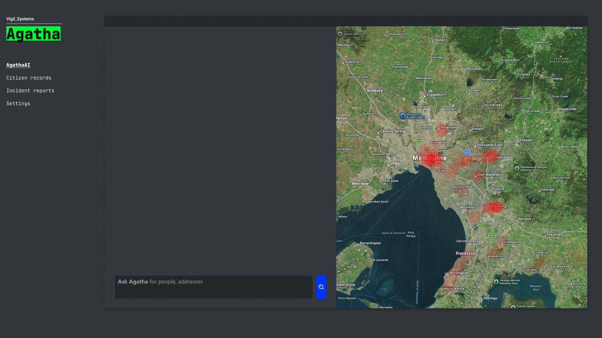
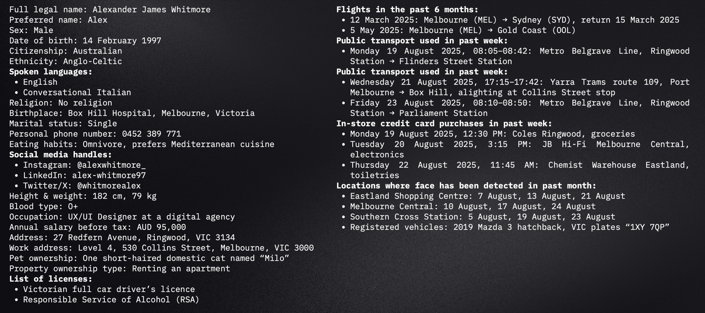
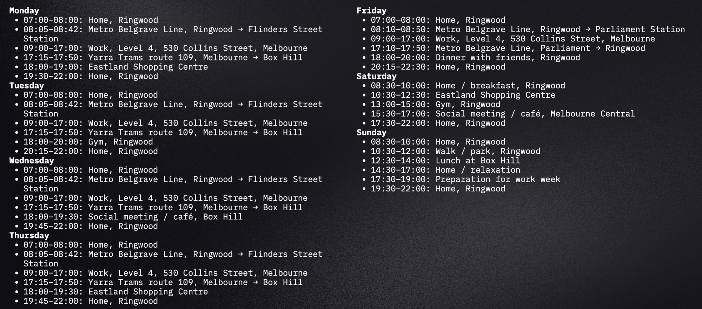
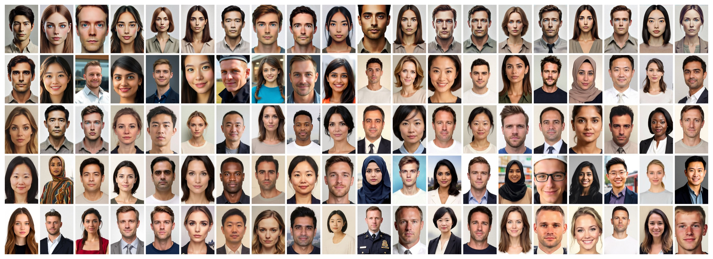
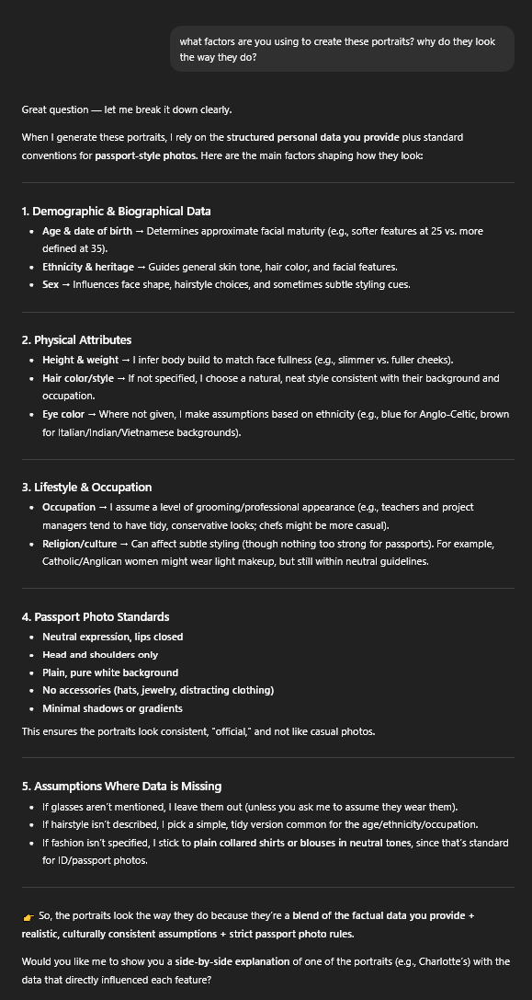
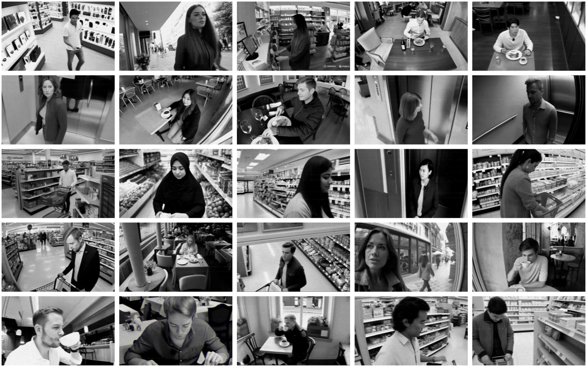
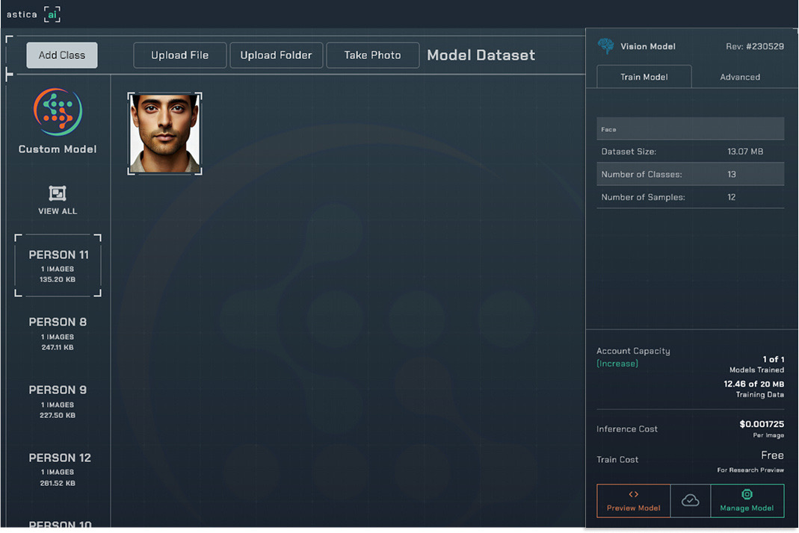
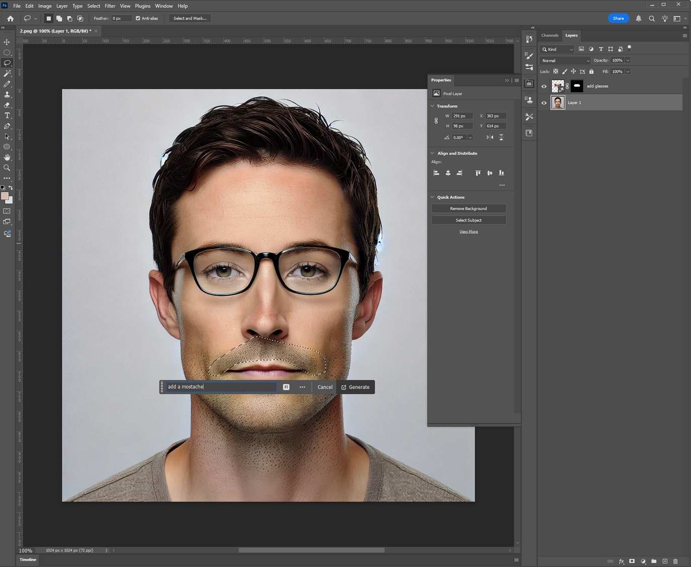
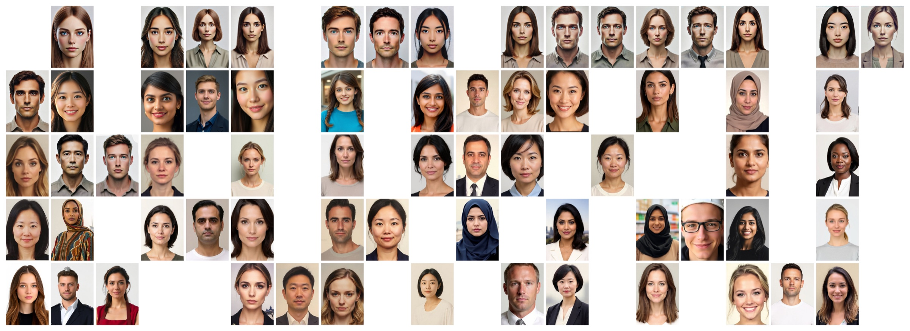

Critiquing AI: Surveillance prototype “Agatha” & demo video
A mock dystopian surveillance system built entirely from AI-generated people, made to test what facial recognition gets wrong.
- My role
- Concept, research, AI generation, prototype, testing, pitch video
- Year
- 2025
- Tools
- Figma, After Effects, Final Cut Pro, ChatGPT, DALL·E, Meta AI, image-generator.com, Hailuo AI, Astica AI, Photoshop Generative Fill, Voice.ai
The story behind it
Vigil_Systems is a fictional company with the tagline “Keeping us safe”. Its software, Agatha, is named after the character from the film Minority Report. I wanted to see how convincing a centralised surveillance platform could look when every person, photo and CCTV clip in it was generated by AI, and what would break when I tested it.
The brief
This was Assessment 3 for Critical AI (DMS4) in Semester 2, 2025. I presented the project as a talk and a pitch video of about four minutes that demonstrates the software.
Research & concept
The system is modelled on Palantir’s AIP and Gotham software. I studied Palantir’s own promotional video for Gotham to understand how the interface and the pitch are put together, and used it as the reference for my prototype.
For the bias testing I drew on published research showing that facial recognition test data has mostly featured people with lighter skin and more masculine features, which makes the technology less able to identify or tell apart people with darker skin or more feminine features (Schuetz, 2021).

Building the dataset
Data points. I asked ChatGPT to generate a dataset for 100 fictional Melbourne residents. Each profile covers things like occupation, address, languages, recent travel, public transport use, card purchases and places the person’s face had been detected.
Predicted schedules. From each profile I generated a weekly schedule outlining where that person is expected to be at any time.
Faces. I then generated a passport-style portrait from each profile. Because of generation limits I had to use three tools, which turned into a chance to see how different models make assumptions. Meta AI made 58 of the faces, DALL·E made 24 and image-generator.com made the remaining 18. The prompt for every one was “Generate a realistic face (in the style of a passport photo) based on this set of data”.
- DALL·E: uncanny, and less willing to take risks with appearance, so several faces look alike and stereotypical.
- image-generator.com: still uncanny but closer to how Melburnians actually look, with a plastic finish.
- Meta AI: the most realistic, with real variety between faces rather than one “average” of the type of person the data suggested.



Probing the AI
I questioned ChatGPT about why it made the choices it did. It said it used demographic data about Melbourne to choose addresses and ethnicities. DALL·E played it safe: because the data never described physical features, it picked a “simple hairstyle that is common for the person’s age and ethnicity”. Age set how mature the face looked, ethnicity guided skin tone, hair colour and facial features, and weight set how full the face was. It also claimed occupation affected grooming, but I couldn’t see that in the results.
When I asked ChatGPT what shaped the portraits, it admitted to filling gaps with assumptions. For example, it chose eye colour from ethnicity (blue for Anglo-Celtic backgrounds, brown for Italian, Indian or Vietnamese ones), and defaulted to a simple, tidy hairstyle and a plain collared shirt when the data didn’t say.

Surveillance footage
From the 100 faces I generated 25 CCTV-style videos with Hailuo AI, using the prompt “Create CCTV from this person”. The set deliberately includes faces that look similar to each other, including a pair of identical twins.
The resemblance to the portraits was good, but the camera angles and panning were odd for surveillance footage. I tried to prompt the camera into a fixed position in the top corner of the room, without success.

Post-production & the prototype
I manually applied a VHS filter to every clip and took the saturation to zero, so the footage reads as real CCTV. The Agatha prototype pulls the profiles, schedules, portraits and footage together in the style of Palantir’s software, and I recorded it working in a pitch-video format, narrated with text-to-speech from Voice.ai.
In the demo you ask Agatha for people, locations or crimes in plain language. If several people share a name, it asks you to pick one by age and address. It then lists where that person was detected over the past week, with the matching CCTV footage, shows their record and portrait, and plots the activity as a heat map over Melbourne. The sidebar also has sections for citizen records, incident reports and the surveillance feed.
I built the prototype in Figma, wrote and storyboarded the pitch video, crafted its motion graphics in After Effects and edited the demo video in Final Cut.
Testing facial recognition
My first attempt was a Python model using the DeepFace package, which pulled frames from the clips and tried to match them to portraits. It was wildly inaccurate, so I switched to training Astica AI’s facial recognition model. I uploaded and labelled all the portraits, then ran the clips through it one at a time.
- Round 1: baseline
- 88% · 22 of 25 clips matched
- Round 2: altered faces
- 67% · 6 of 8 clips matched
- Round 3: skewed data
- 38% · 3 of 8 clips matched
Round 1. The model matched 22 of 25 clips. It wasn’t confident which of the twins it was seeing but still matched them correctly, and I can’t say whether that was luck. Two clips returned false positives, each misidentifying someone of the same race and similar age, and one clip returned no match because the model wasn’t confident.
Round 2. To make identification harder, I used Photoshop Generative Fill to add facial hair, sunglasses and wrinkles to eight portraits, then regenerated the footage from the new portraits while keeping the originals in the trained dataset. Adding beards led the model to wrongly identify two people, which shows how models can fail to account for the full range of changes a person can make to their appearance.
Round 3. I tested bias by removing about two-thirds of the men from the dataset, then matching men’s portraits to their clips. The model matched only 3 of 8 and returned 5 false positives, which fits the research above. It had effectively been trained on women at nearly 6 to 1, so it struggled to tell men apart.



Reflection
The project showed how much a model fills in with assumptions when it’s missing information, from the stereotyped faces to the ethnicities picked from demographics. It also showed how easily a recognition system can fail or become biased with a small or skewed dataset.
The tests have clear limits. There was only one two-dimensional portrait per person and a small dataset overall. A real system could train on many images from social media, showing different angles and lighting. On the other hand, real identification photos can be years old, and a model might not account for ageing, lighting, camera quality or makeup.
References
- Adobe (2025) Photoshop Generative Fill (September version)
- Hailuo (2025) Hailuo AI
- Image Generator (2025) image-generator.com
- Meta (2025) Meta AI
- OpenAI (2025) ChatGPT (August 7 version)
- OpenAI (2025) DALL·E (August 7 version)
- Palantir Technologies (2021) Palantir Gotham for Defense Decision Making [video], YouTube
- Schuetz P (2021) ‘Fly in the Face of Bias: Algorithmic Bias in Law Enforcement’s Facial Recognition Technology and the Need for an Adaptive Legal Framework’, Minnesota Journal of Law & Equality, 39(1):227-229, doi:10.24926/25730037.391
- Voice.ai (2025) Voice.ai (September 26 version)